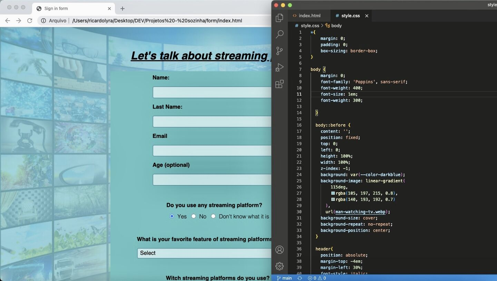
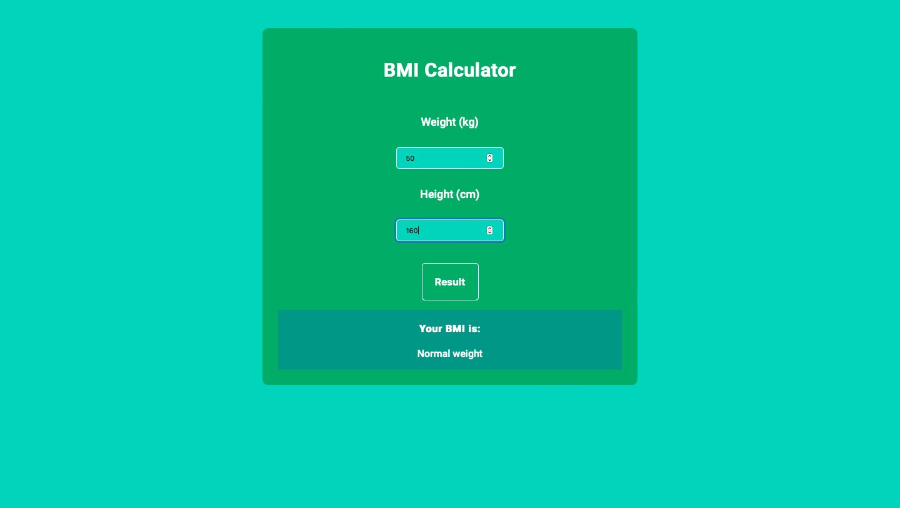
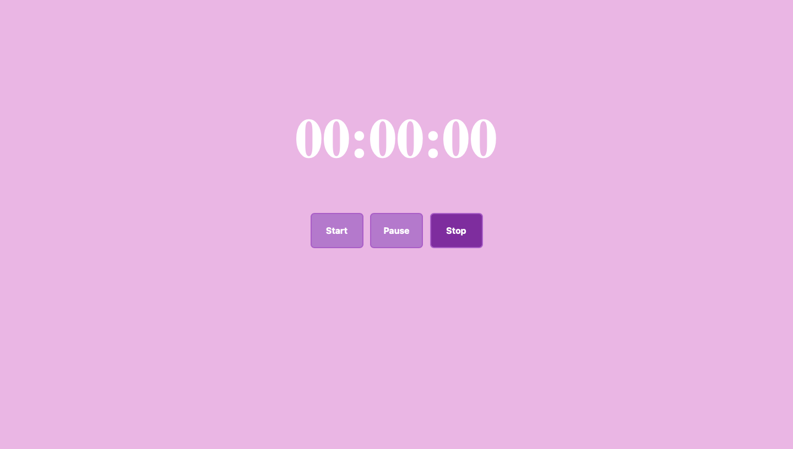
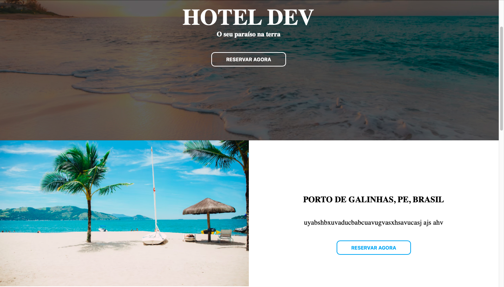

Sobre mim
Sou estudante de Análise de Desenvolvimento de Sistemas no Instituto Infnet, localizado no Rio de
Janeiro, Brasil, em busca de uma primeira oportunidade de emprego. Minha paixão pela programação
surgiu em um momento que eu estava realizando transição de carreira.
Sou formada em direito e sou advogada, mas nunca me identifiquei com a profissão, por isso, decidir
buscar novas áreas do direito, dentre elas, se encontra a área que associa direito a tecnologia, foi
assim que acabei descobrindo o desenvolvimento web.
Além do curso de Análise de Desenvolvimento de Sistemas, estou estudando em um curso da Udemy de
JavaScript e TypeScript, além do curso SejaDev. Ambos ensinam como se tornar um desenvolvedor web
profissional.
Atualmente, meu foco está em HTML/CSS, JavaScript e React.
Experiência
Atualmente, estou cursando Análise e Desenvolvimento de Sistemas, onde venho estudando e me
aprofundando em HTML, CSS e JavaScript. Além da graduação, estou cursando Dev em dobro, o curso de
JavaScript e TypeScript do Luiz Otávio Miranda e o curso 50 projects in 50 days do Brad Traversy.,
ambos na Udemy.
No decorrer dos cursos, venho desenvolvendo vários pequenos projetos, os quais me proporcionam
diversos conhecimentos para quando eu conseguir a minha primeira oportunidade de trabalho como
desenvolvedora web.
Projetos
> >  >Em breve